채널: 레디포그로스 (Ready For Growth) | 길이: 22:35 | 날짜: 2026-02-02
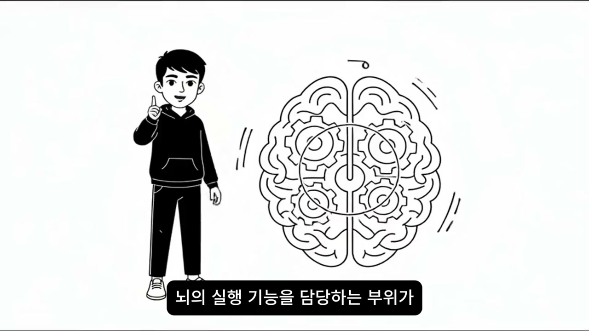
세그먼트 1(0:00~0:51)은 매우 공격적인 문제 정의로 시작합니다. “당신의 뇌는 지금 고장 나 있다”는 선언 뒤, 2025년 하버드 대신경과학팀, 만성 미루기 1,200명, 전전두엽 활성도 평균 대비 31% 저하라는 숫자를 제시하며 도입 신뢰도를 확보합니다. 화면도 인물 옆에 톱니가 돌아가는 뇌 일러스트를 배치해 ‘의지론’이 아니라 ‘기능론’으로 프레이밍합니다.
화자는 즉시 시청자의 일상 장면을 찌릅니다. 할 일 목록을 예쁘게 정리해놓고 첫 항목이 그대로 남는 상태, 중요한 메일 답장을 20분 동안 첫 문장만 고민하다 창을 닫아버리는 상태를 구체적으로 말해 “내 얘기”처럼 인식하게 만듭니다. 이 구간은 공감 유도 + 자기비난 해체의 역할을 동시에 수행합니다.
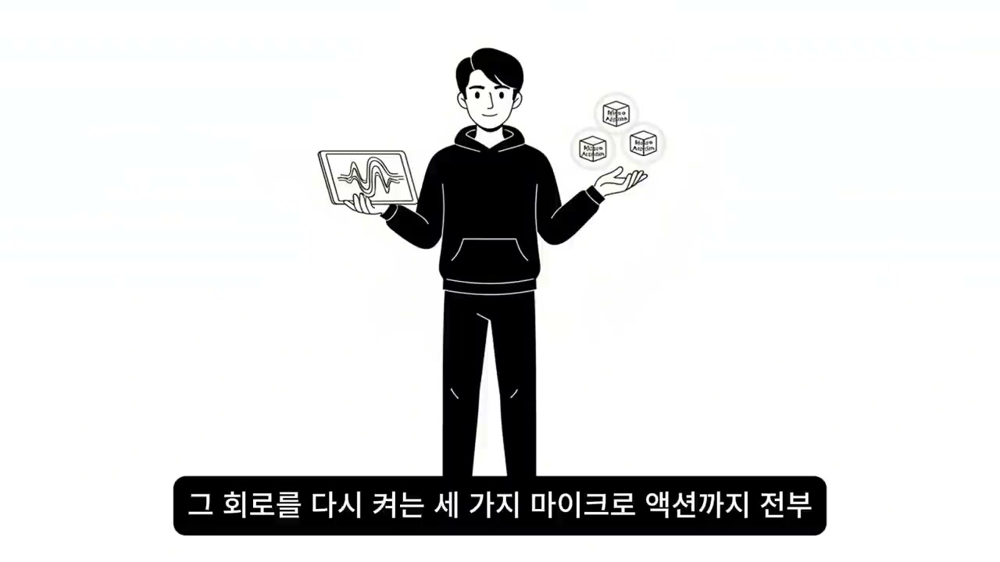
세그먼트 2(0:51~1:38)에서는 “마감 코앞인데 갑자기 방 청소” 같은 전형적 회피행동을 제시하며, 다시 한번 “게을러서가 아니다”를 반복합니다. 그리고 이 영상의 계약을 제시합니다. 왜 그런 선택을 하는지 신경과학적으로 진단하고, 회로를 다시 켜는 3가지 마이크로 액션을 제공하며, 내일부터가 아니라 오늘 밤부터 변화 가능하다고 선언합니다.
화면도 인물이 양손에 서로 다른 아이콘(데이터·블록)을 들고 있어 “원인 분석 + 실행 도구”의 이중 구조를 시각화합니다. 여기서 화자는 개인 고백(연구 전 3년을 날림, 매일 아침 6시 결심 반복 실패)으로 권위보다 경험 기반 신뢰를 추가합니다.
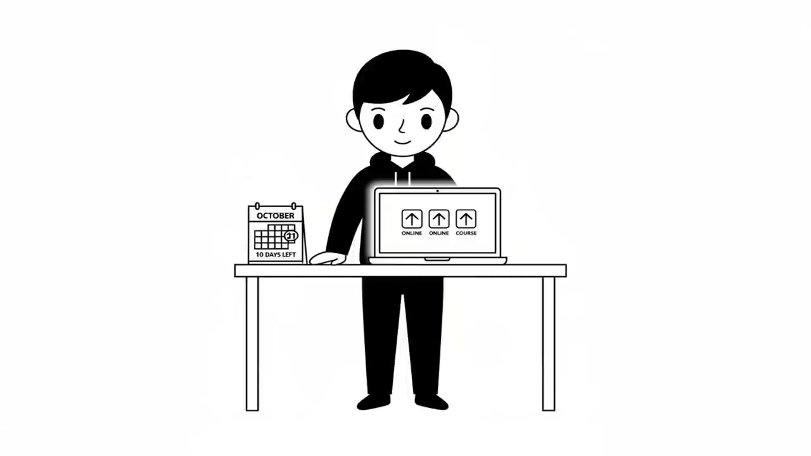
세그먼트 3(1:38~2:25)는 자기 사례를 숫자화해 미루기의 메커니즘을 드러냅니다. 알람 5개를 맞춰도 무의식적으로 끄고 9시에 깨는 패턴, 죄책감이 하루 전체를 누르는 패턴, 회사 기획안 마감 10일 전인데 실제 작성 대신 강의 3개 결제, 레퍼런스 폴더 7개 분류, 경쟁사 보고서 20개+ 읽기 같은 준비 과잉 패턴이 소개됩니다.
핵심은 “일을 안 한 게 아니라 엉뚱한 준비를 과도하게 한 것”입니다. 화면에 ‘10 DAYS LEFT’ 달력과 온라인 코스 아이콘이 등장해 이 왜곡된 생산성(가짜 진척)을 정확히 시각화합니다.
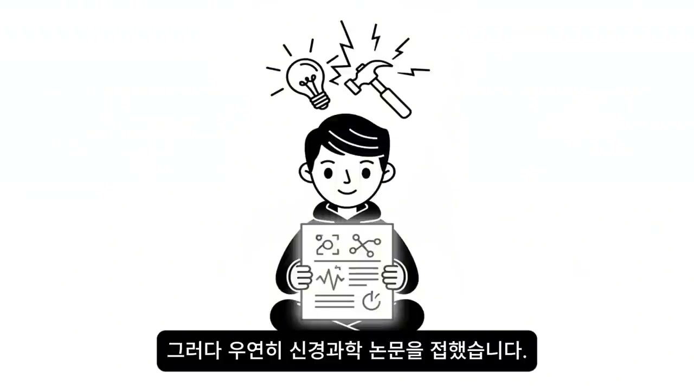
세그먼트 4(2:25~3:11)는 전환점입니다. 상사 피드백 “부족해”가 3년 반복되며 형성된 자기정체성(나는 의지가 약한 사람)과, 그 자책이 오히려 미루기를 강화한 악순환을 고백합니다. 이후 신경과학 논문을 접한 경험을 “머리를 망치로 맞은 느낌”으로 묘사하며, 문제를 도덕성에서 구조로 이동시킵니다.
이 구간의 종결 문장은 다음 파트의 논리 기둥입니다. “우리 뇌에는 두 시스템이 있다: 전전두엽(계획·실행·충동억제) vs 편도체(위협 감지·공포 반응).”
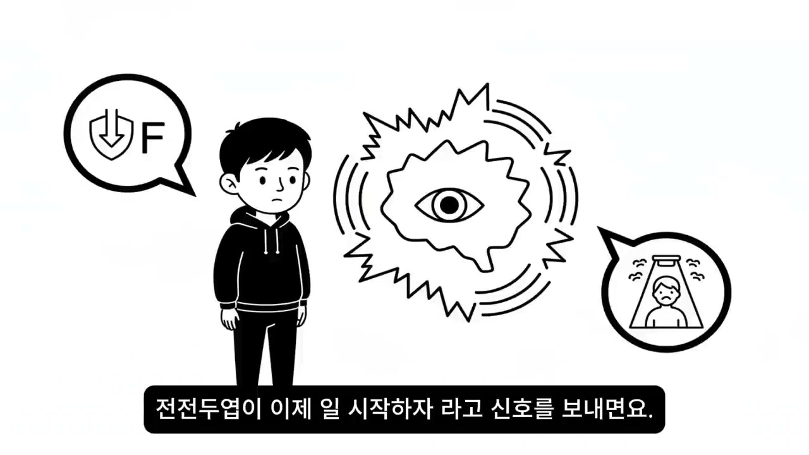
세그먼트 5(3:11~4:12)는 구조 설명 파트입니다. 전전두엽은 “뇌 속 CEO”, 편도체는 “뇌 속 화재경보기”로 비유됩니다. 정상 상태에서는 전전두엽 명령을 편도체가 따르지만, 만성 미루기 상태에서는 신호 충돌이 발생해 “일 시작” 신호가 “위험·실수·창피” 경보로 번역됩니다.
여기서 2024년 피어 리서치 데이터: 미루기 습관자의 87%가 완벽주의 성향 동반이라는 수치를 제시합니다. 핵심 결론은 날카롭습니다. 완벽주의는 품질을 높이는 장치가 아니라 시작을 막는 장치가 될 수 있다는 점입니다.
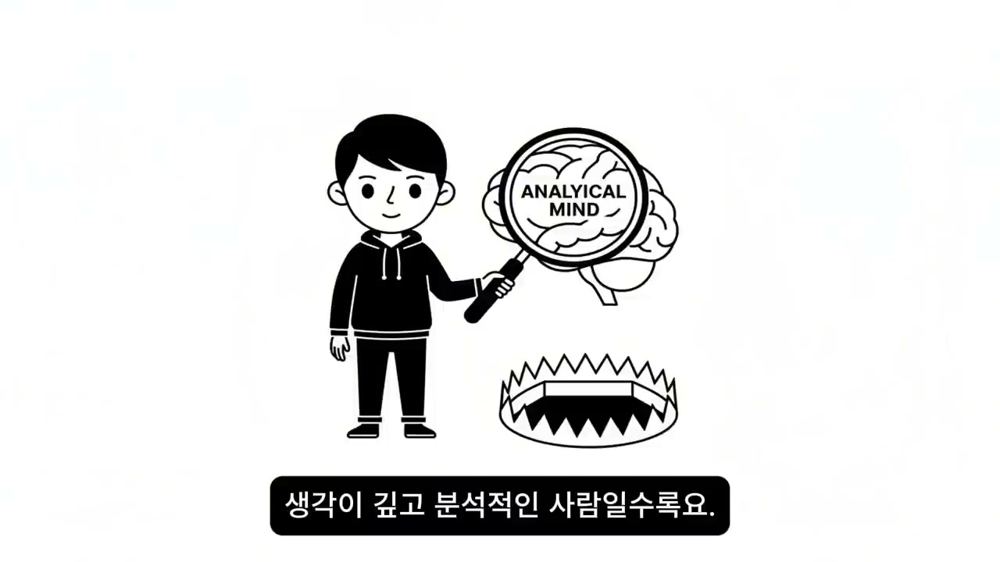
세그먼트 6(4:12~5:02)는 회피행동의 목록을 구체화합니다. 쇼츠 넘기기, 쇼핑몰 장바구니 구경, 갑자기 오래된 사진첩 정리 같은 행동이 “불안 탈출용 방어기제”로 설명됩니다.
특히 생각이 깊고 분석적인 사람, 내향적·직관적 유형일수록 이 함정에 더 잘 빠진다고 말합니다. 화면의 ANALYICAL MIND(오타 포함)와 함정(덫) 이미지는 “인지 능력의 강점이 시작 지연의 리스크로 전환되는 역설”을 상징합니다.
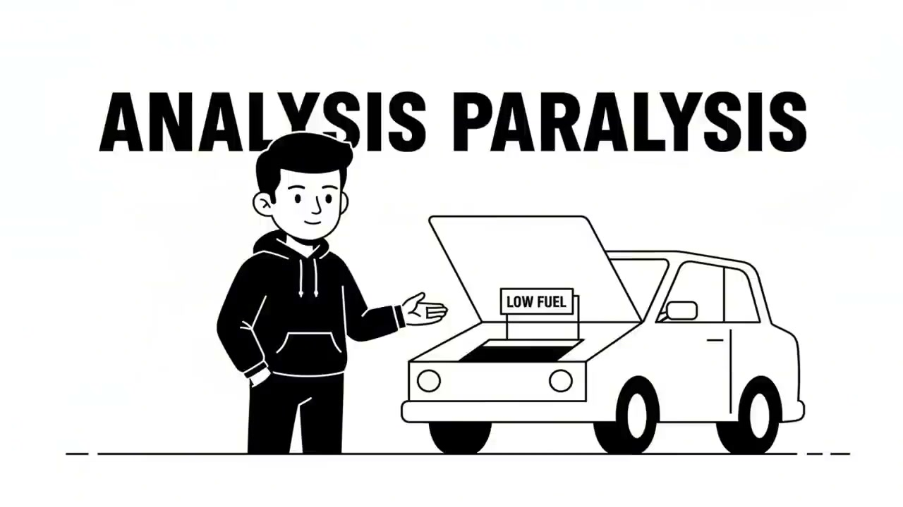
세그먼트 7(5:02~5:50)는 DMN(디폴트 모드 네트워크) 설명과 에너지 고갈 모델입니다. 쉬는 중에도 뇌가 계속 시뮬레이션을 돌려 모든 경우의 수를 계산하다가, 실행 단계에서는 전전두엽 연료가 바닥난다는 설명입니다.
그래서 “연료가 바닥난 자동차처럼 시동이 안 걸리는 상태”가 되고, 이를 학술 용어로 분석 마비(analysis paralysis)라 부른다고 정리합니다. 결론은 재차 동일합니다. “게으른 게 아니라, 너무 열심히 잘못된 곳에 에너지를 썼다.”
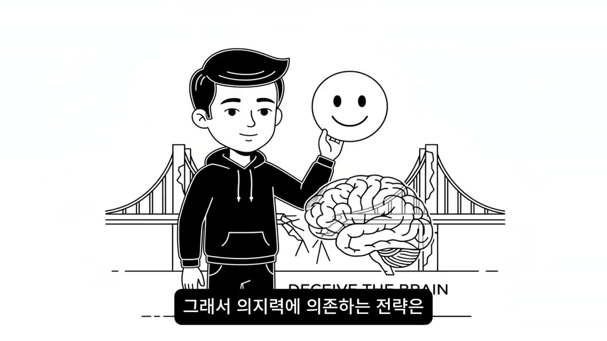
세그먼트 8(5:50~6:39)에서 화자는 “의지력을 키우자” 접근을 명시적으로 폐기합니다. 2025년 프린스턴 연구를 근거로 의지력은 근육처럼 고갈되는 자원이며(아침 강함, 저녁 약함), 따라서 의지력 중심 전략은 구조적으로 실패한다고 말합니다.
대안은 뇌를 속이는 것입니다. 즉, 편도체가 경보를 울리지 않게 작업의 위협 수준을 낮추는 설계가 핵심이며, 이후 소개될 전략 전체의 공통 원리로 제시됩니다.
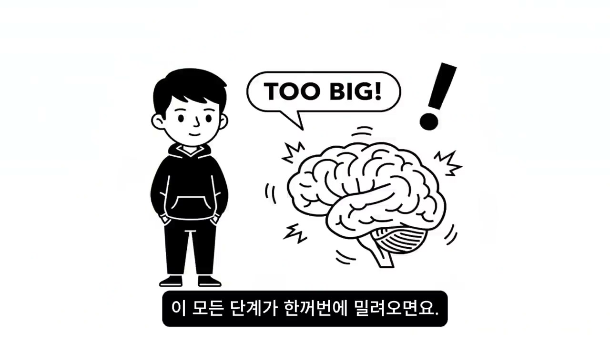
세그먼트 9(6:39~7:25)는 전략 1의 본체입니다. 미루기의 최대 적은 일 자체가 아니라 “시작의 무게감”이며, ‘보고서 작성’이라는 단어만으로 조사·구조화·초안·수정 등 전체 여정이 한꺼번에 떠올라 편도체가 TOO BIG! 경보를 띄운다는 설명입니다.
처방은 단순하고 구체적입니다. 120초 타이머, 2분만 하겠다고 약속, 그 시간에는 키보드에 손만 올려 아무 문장이나 작성. 목적은 진척이 아니라 ‘시작 행위의 점화’입니다.
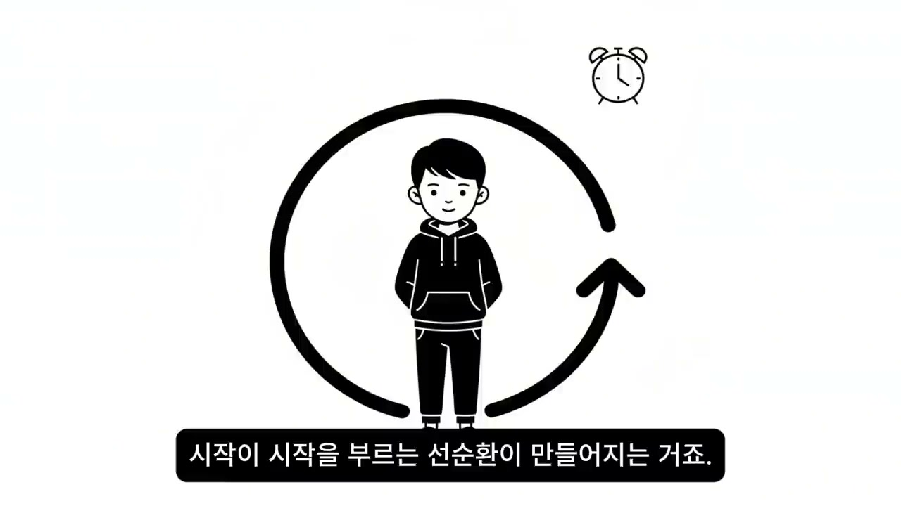
세그먼트 10(7:25~8:17)에서는 왜 효과가 나는지 생물학적 설명을 붙입니다. 2023년 MIT 신경과 연구팀 결과로, 행동 시작 시 도파민 분비가 전전두엽을 활성화하고 편도체 경보를 약화시켜 “시작이 시작을 부르는 선순환”을 만든다고 말합니다.
개인 실험 데이터도 제시됩니다. 3개월 적용 후 착수 지연 시간 47분 → 8분, 거의 6배 개선. 또 “2분만 하려다 30~40분 몰입”되는 날이 늘었다고 보고합니다.
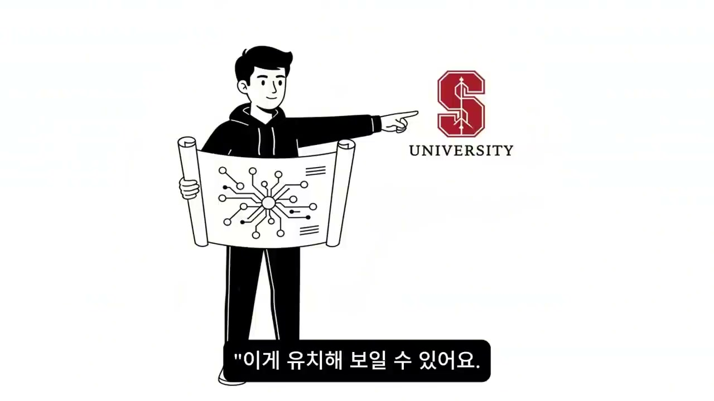
세그먼트 11(8:17~9:10)은 완벽주의를 끄는 의식적 선언을 제안합니다. 작업 전 “지금부터 쓰는 건 쓰레기 초안이다 / 퀄리티는 신경 안 쓴다 / 일단 존재하게 만드는 게 목표다”를 스스로에게 말하라는 방식입니다.
화자는 이 문구가 유치해 보여도 신경과학적으로 정교하다고 설명하고, 2024년 스탠퍼드 행동과학연구소 실험에서 “불완전 허용을 명시적으로 준 그룹”의 완수율이 2배 이상 높았다고 인용합니다.
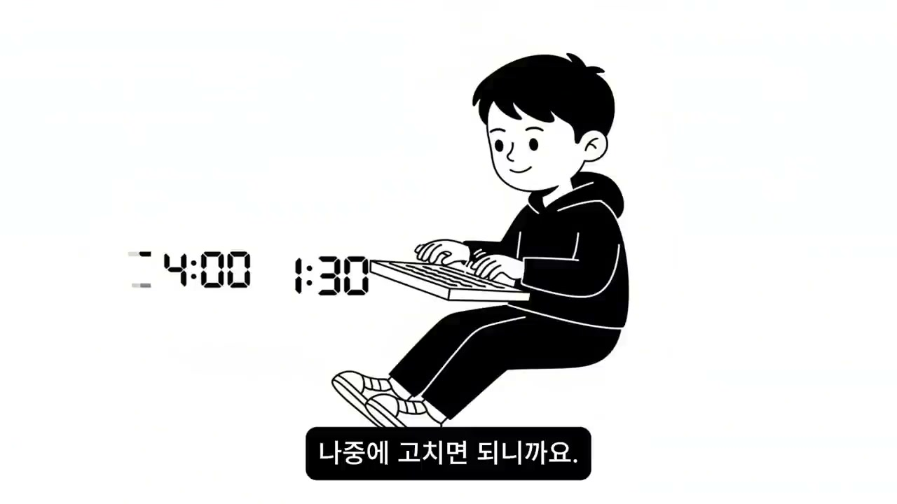
세그먼트 12(9:10~10:03)는 전략 2의 체감 효과와 전략 3로의 브리지입니다. 본인은 예전에 첫 문장에 2시간을 소모했지만, 지금은 아무 문장부터 쓰고 나중에 고치며 초안 완성 시간이 평균 4시간 → 1시간 30분으로 줄었다고 말합니다.
이어 많은 사람이 저지르는 실수(유혹을 의지력으로 버티기)를 지적하며 환경 설계 해킹으로 전환합니다.
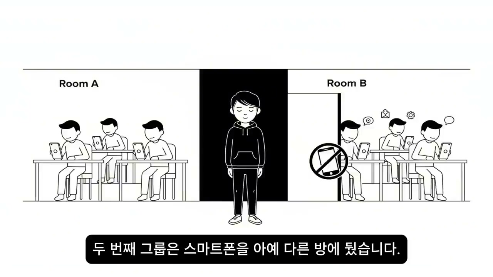
세그먼트 13(10:03~10:51)은 “편도체와 정면승부하면 100% 진다”는 문장으로 시작합니다. 2025년 시카고대 행동경제학 실험: A그룹은 스마트폰을 책상 위(뒤집어 둠), B그룹은 스마트폰을 아예 다른 방에 둠. 결과는 B그룹 집중 지속시간 62% 증가입니다.
핵심 원리는 선택지의 물리적 제거입니다. 의지력을 덜 쓰는 환경을 먼저 만들라는 것입니다.
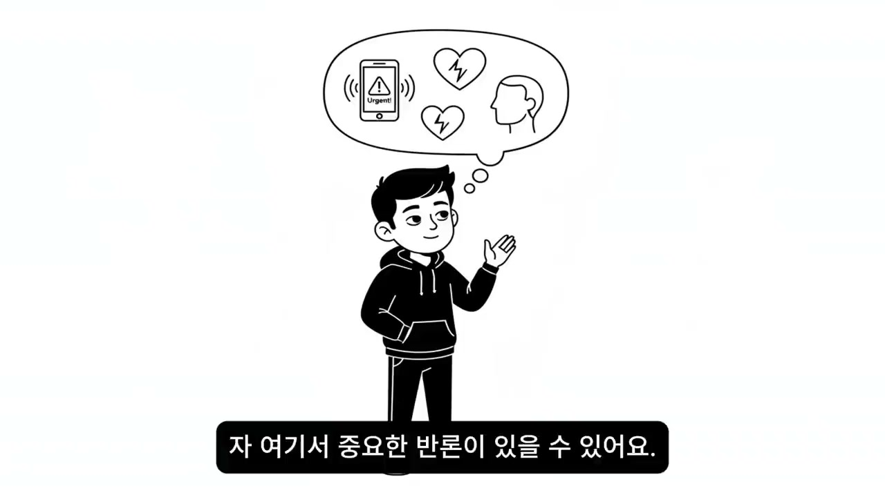
세그먼트 14(10:51~11:39)는 반론 처리 구간입니다. 화자 본인 적용법은 작업 전 스마트폰을 현관 신발장 위에 두고, PC에는 작업 전용 계정을 만들어 유튜브·쇼핑몰 접속을 차단한 것입니다. 처음엔 불편하지만 일주일 지나면 뇌가 적응해 딴짓 충동 자체가 줄었다고 말합니다.
“급한 연락이 오면?” “멀리 두면 불안하다”라는 반론은 진화심리로 설명합니다. 인간의 뇌는 연결 단절을 위협으로 느끼도록 진화했다는 것입니다.
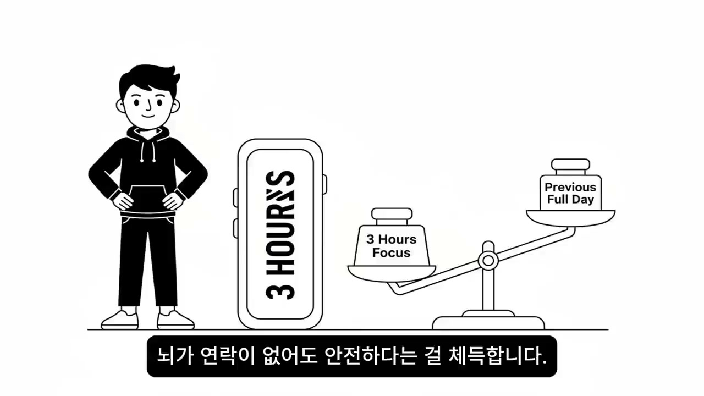
세그먼트 15(11:39~12:28)는 현대적 재학습 제안입니다. “지금은 2026년, 2시간 연락이 안 된다고 죽지 않는다”는 문장으로 맥락을 바꾸고, 단계적 분리(30분→45분→1시간)로 안전 학습을 시키라고 제안합니다.
화자 본인은 현재 3시간 무연락 집중 가능, 그리고 그 3시간 집중력이 과거 하루치 생산성을 넘는다고 말합니다. 이 시점에서 앞선 3전략(2분 점화 + 완벽 제거 선언 + 환경 해킹)의 결합 효과를 재강조합니다.
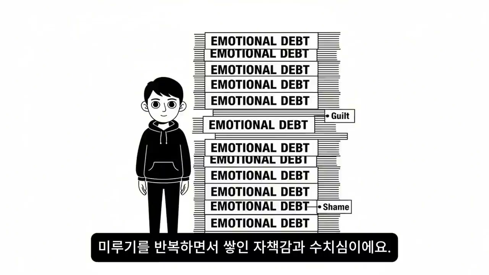
세그먼트 16(12:28~13:16)은 “알면서도 못하는 이유”를 감정부채로 설명합니다. 미루기를 반복하며 쌓이는 죄책감·수치심이 복리처럼 불어나고, 어제 미룬 일에 대한 죄책감이 오늘의 에너지를 갉아먹어 오늘도 미루게 되는 악순환입니다.
여기서 2025년 캘리포니아대 심리학과 연구가 언급됩니다. 즉, 실행 실패는 기술 부족보다 정서적 부채 누적과 더 깊게 연결된다는 프레임입니다.
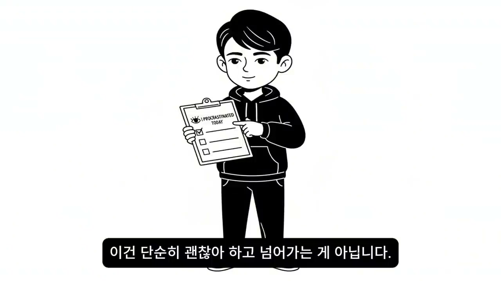
세그먼트 17(13:16~14:04)에서는 데이터와 프로세스를 제시합니다. 자기비난 성향이 높은 사람은 자기연민 성향이 높은 사람보다 미루기 습관 탈출 확률이 73% 낮다고 인용합니다.
이에 따라 전략 4는 ‘감정 방치 금지’ 절차로 정의됩니다. 1) 미룬 사실을 회피 없이 명확히 인정, 2) 현재 감정의 이름 붙이기(죄책감/부끄러움 등).
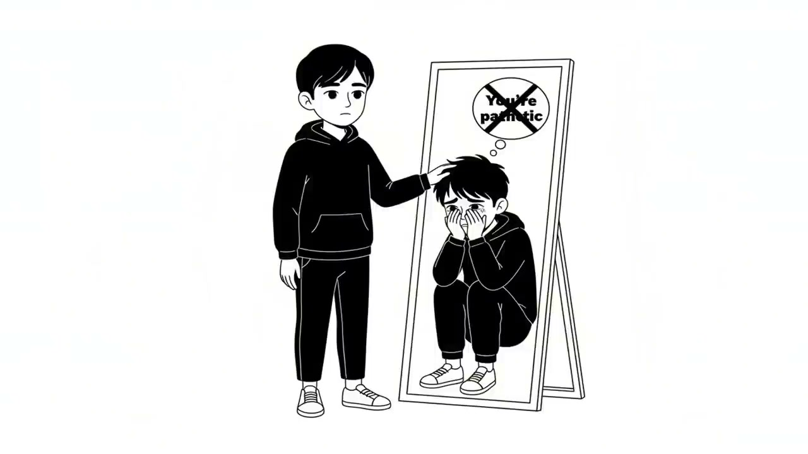
세그먼트 18(14:04~14:50)은 감정 라벨링의 신경학 효과를 말합니다. 2024년 예일대 감정연구소 결과로 감정 라벨링이 편도체 활성도를 낮춘다고 인용합니다.
3단계는 “친구에게 말하듯 자신에게 말하기”입니다. “한심하다”가 아니라 “힘들었지, 내일 다시 하면 돼.” 화자는 이 적용 후 다음 날 회복 속도가 과거와 달라져, 예전엔 오전 내내 무너졌다면 지금은 15분 내 리셋된다고 말합니다.
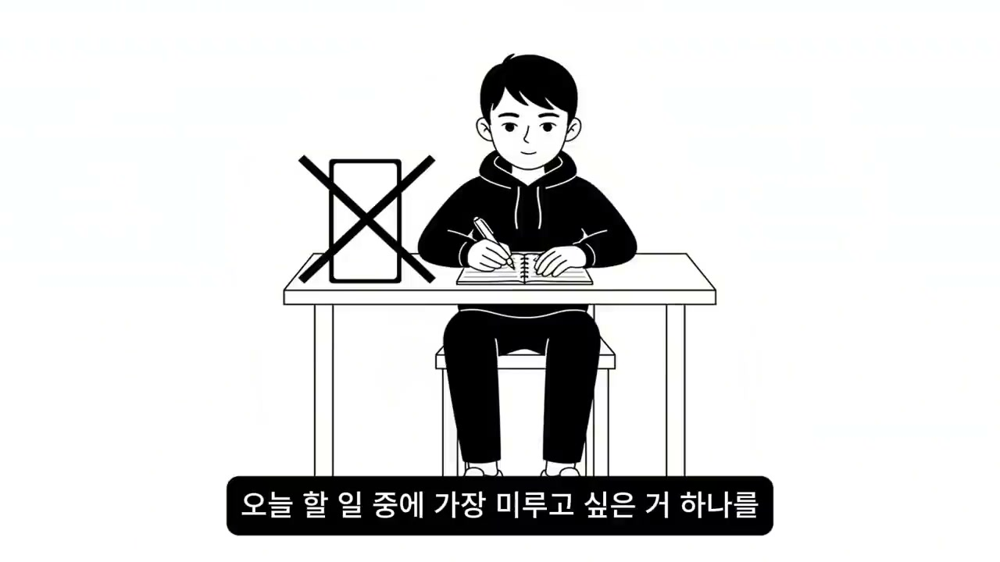
세그먼트 19(14:50~15:43)는 실행 매뉴얼 구간입니다. “오늘 밤부터 당장 쓸 수 있는 3분 루틴”을 제시하며, 매일 아침 3분 투자만 요구합니다.
1분 차: 오늘 할 일 중 가장 미루고 싶은 일 하나를 종이에 손글씨로 씁니다(화면 입력 금지). 2023년 도쿄대 연구로 손글씨가 타이핑보다 기억 정착률이 29% 높다고 근거를 붙입니다. 2분 차: 그 일을 가장 작은 단위로 쪼갭니다(예: ‘보고서 쓰기’가 아니라 ‘파일 열기’).
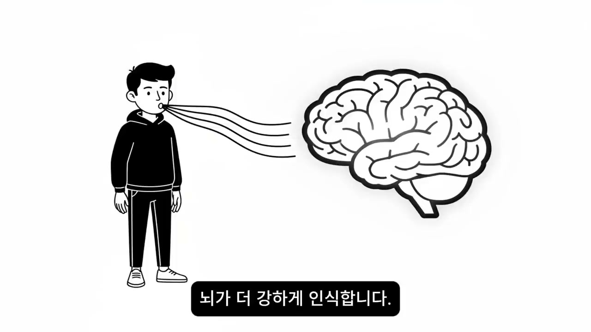
세그먼트 20(15:43~16:37)는 3분 차를 구성합니다. 2분 점화 시작 시간을 구체적으로 박고(예: 오전 9:30에 파일 열고 2분 쓰기), 완벽 제거 선언문을 소리 내어 읽으라고 지시합니다.
청각 정보가 추가되면 기억 강도가 올라간다는 설명이 붙고, 이 루틴을 21일 반복하면 신경가소성으로 회로가 물리적으로 바뀐다고 주장합니다. 2025년 런던대 신경과학 메타분석 언급도 이 대목에 들어갑니다.
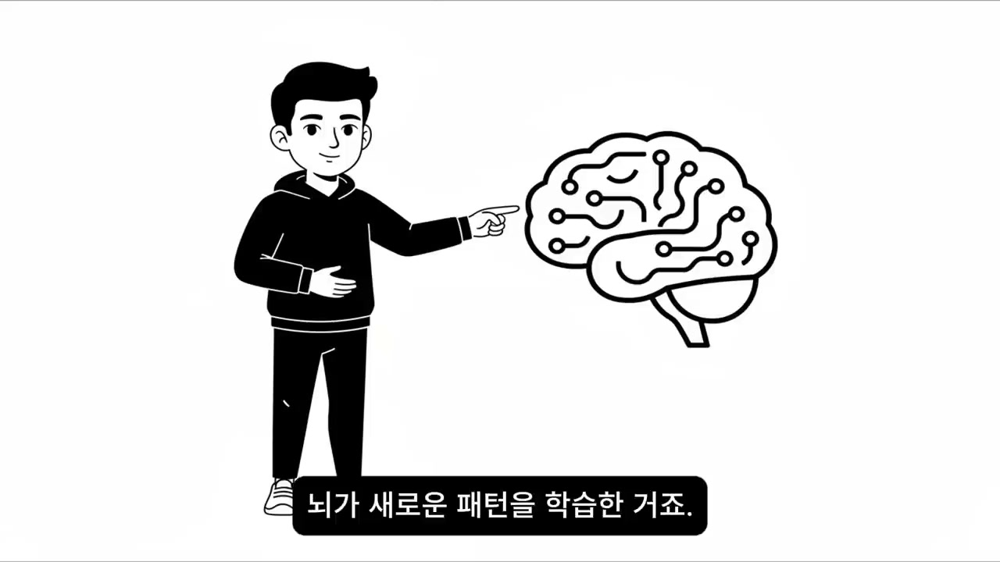
세그먼트 21(16:37~17:26)은 결과와 현실 점검을 동시에 제시합니다. 화자는 루틴을 30일 적용해 업무 생산성 2배 증가, 그리고 시작 전의 묵직한 저항감이 사라졌다고 말합니다.
하지만 “알았다고 내일부터 완벽해지진 않는다”는 현실 고백도 합니다. 첫 주에 4일 성공·3일 실패했고, 그때 자기비난이 다시 올라왔다고 말합니다.
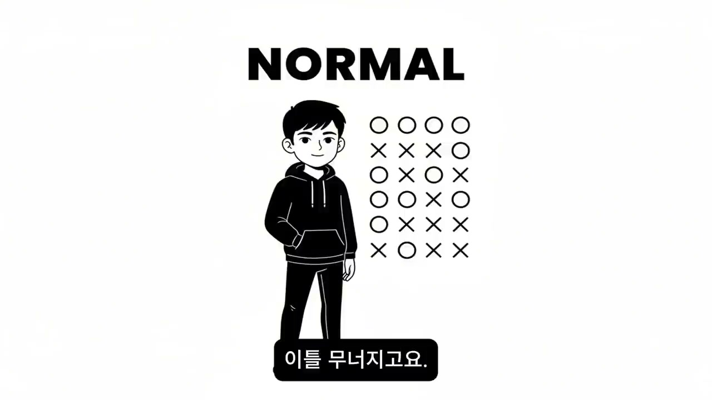
세그먼트 22(17:26~18:21)는 비선형 모델을 제시합니다. 2024년 7월 연방공과대학 신경과학팀의 습관 형성 추적에서 퇴행 구간은 필연이며(3일 전진 2일 후퇴, 5일 전진 1일 후퇴), 이것이 정상이라고 설명합니다.
문제는 한 번의 실패를 전체 실패로 확대 해석하는 전부-아니면-전무 사고입니다. 화자는 이를 편도체 과잉 반응으로 규정합니다.
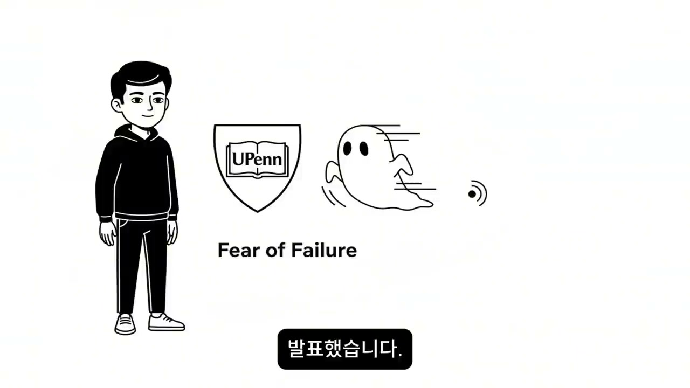
세그먼트 23(18:21~19:14)는 해법으로 리셋 버튼 개념을 제시합니다. “어제 실패했어도 오늘 아침 카운트는 다시 1”이라는 규칙입니다.
단순하지만 습관 유지율 3배 이상 상승(2025 펜실베이니아대 행동과 연구소) 근거를 붙이며, 본인도 과거엔 하루 실패 후 일주일을 날렸지만 지금은 다음 날 즉시 복구한다고 말합니다. 결론은 “완벽이 아니라 꾸준함”입니다.
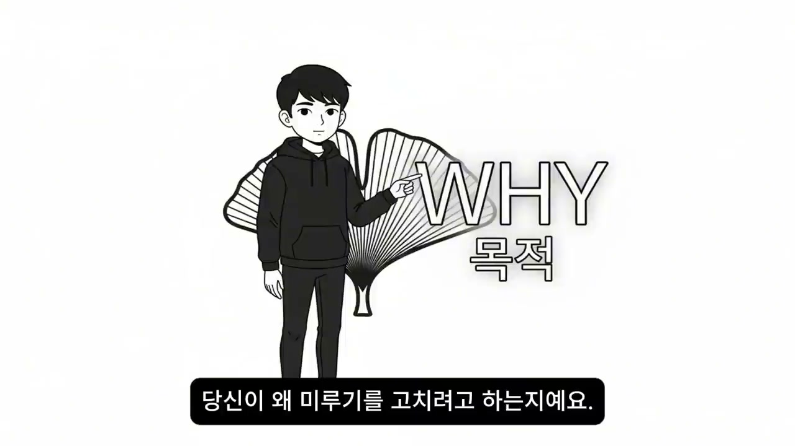
세그먼트 24(19:14~20:08)는 영상의 ‘본질’ 파트입니다. 지금까지 4전략(2분 점화, 완벽 제거 선언문, 환경 설계 해킹, 전략적 자기용서) + 3분 루틴을 제시했지만, 그보다 중요한 것은 “왜 미루기를 고치려는가”라는 목적이라고 말합니다.
2025 도쿄대 동기 연구팀 실험에서 생산성 향상 프로그램 참가자를 두 그룹으로 나눕니다. 1그룹은 “이걸 하면 연봉이 오른다” 같은 외적 보상, 2그룹은 “소중한 사람과 더 오래 함께할 시간을 확보한다” 같은 내적 목적 프레이밍을 받습니다.
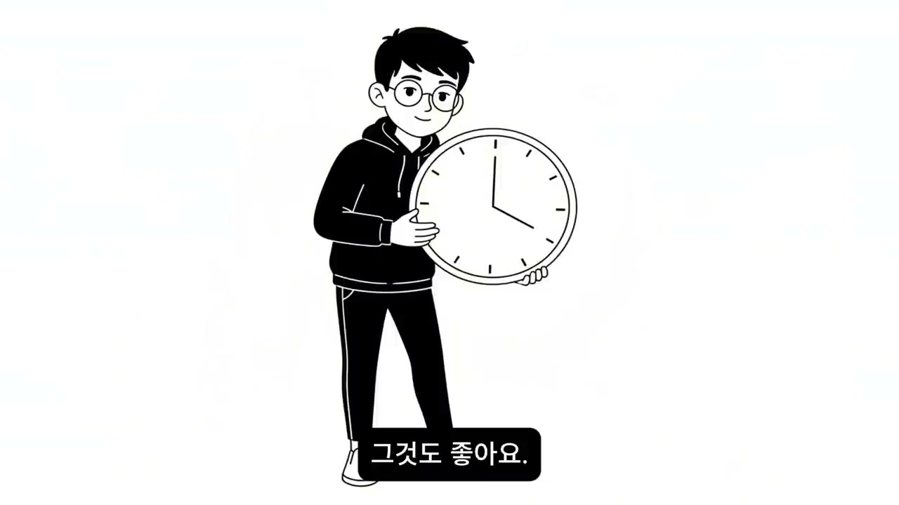
세그먼트 25(20:08~20:57)는 결과 해석입니다. 3개월 후 유지율은 내적 동기 그룹이 2.5배 높음. 화자는 시청자에게 “미루기 극복으로 생긴 시간을 어디에 쓸 것인가?”를 묻고, 승진·연봉은 좋지만 그 다음 질문(그 돈과 시간으로 무엇을 할 것인가?)까지 가야 한다고 강조합니다.
본인 답은 3년 싸움 끝에 찾았다고 말합니다. “저녁 7시에 퇴근해 가족과 밥 먹기”가 진짜 목적이었다는 고백이 이 파트의 정서적 피크입니다.
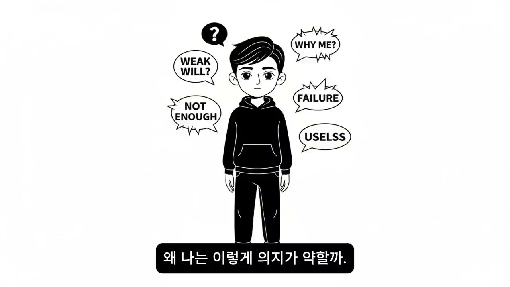
세그먼트 26(20:57~21:51)은 목적의 확장입니다. 주말에 일 걱정 없이 취미에 몰입하고, 밤에 내일 할 일 걱정 없이 잠드는 삶이 자신의 목표였다고 말합니다.
이때 미루기 극복의 정의를 재설정합니다. “일을 빨리 끝내는 기술”이 아니라 “내 시간을 내가 원하는 곳에 쓰게 되는 상태”. 동시에 시청자의 자기비난 독백(왜 의지가 약할까/왜 아는 것도 못할까)을 정확히 대리 발화하며 공감의 강도를 높입니다.
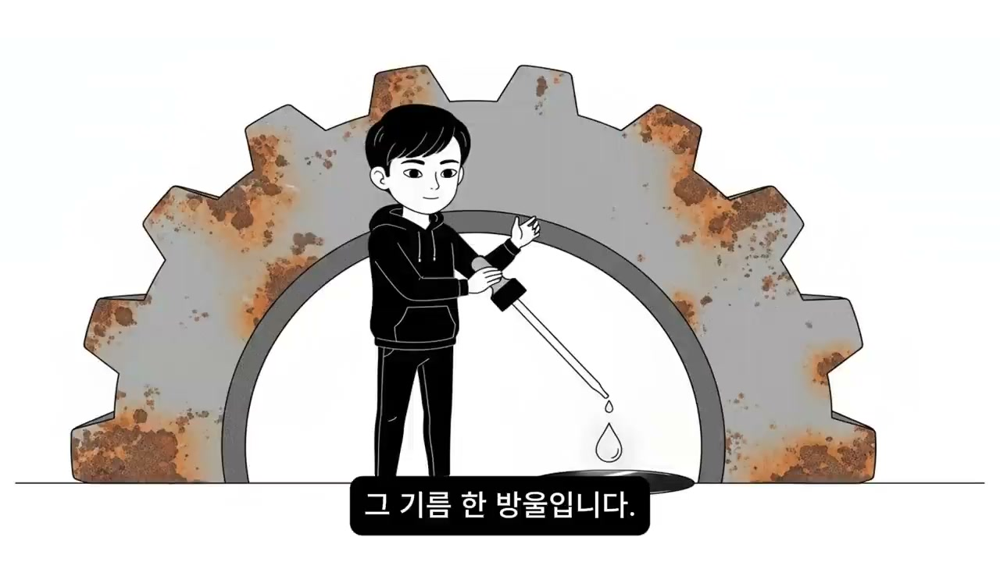
세그먼트 27(21:51~22:36)은 행동형 마무리입니다. 오늘 밤 2분, 내일 아침 3분 루틴부터 시작하라고 촉구하고, 완벽하지 않아도 된다는 메시지를 반복합니다.
대표 비유는 “녹슨 톱니바퀴에 기름 한 방울”. 오늘의 2분이 바로 그 한 방울이며, 천천히라도 회전은 다시 시작된다는 결론입니다. 마지막에는 채널 브랜딩(데이터+심리 기반 성장 전략), 구독·좋아요·알림 요청, 응원 멘트로 클로징합니다.
“당신의 뇌는 지금 고장 나 있습니다. 이게 과장이 아니에요.”
“미루는 사람들의 전전두엽 활성도가 평균 대비 31%나 낮았습니다.”
“당신이 게으른 게 아닙니다. 진짜 원인은 완전히 다른 곳에 있어요.”
“완벽주의가 일을 잘하게 만드는 게 아니라, 오히려 시작조차 못하게 막는다는 거예요.”
“이걸 학술용어로 분석 마비라고 합니다.”
“의지력은 근육처럼 고갈되는 자원입니다.”
“해결책은 뇌를 속이는 겁니다. 2분만 하자고 약속하세요.”
“지금부터 쓰는 건 쓰레기 초안이다. 일단 존재하게 만드는 게 목표다.”
“핵심은 선택지를 물리적으로 제거하는 겁니다.”
“미루기를 반복하면서 쌓인 자책감과 수치심, 그게 감정부채입니다.”
“자기비난은 해결책이 아니라 오히려 문제를 악화시킵니다.”
“어제는 어제고 오늘은 오늘입니다. 카운트는 다시 1부터.”
“완벽하게 안 해도 됩니다. 꾸준히만 하면 돼요.”
“당신이 왜 미루기를 고치려 하는지, 목적이 가장 중요합니다.”
“당신은 게으른 게 아닙니다. 당신 뇌가 잠시 과부하 상태였을 뿐이에요.”
이 영상은 미루기 문제를 도덕적 실패에서 신경회로 문제로 옮기고, 그에 맞는 개입을 “작게, 즉시, 반복 가능하게” 설계합니다. 특히 시작 임계치 낮추기(2분), 위협 신호 제거(완벽주의 해제), 유혹의 물리적 차단(환경 설계), 실패 후 정서 복구(전략적 자기용서)를 하나의 체계로 묶은 점이 핵심입니다.
실용적으로 보면, 이 영상의 강점은 “고난도 계획”이 아니라 “바로 실행 가능한 최소 단위”에 있습니다. 오늘 2분, 내일 3분 루틴처럼 즉시 착수 가능한 형태이기 때문에 행동 전환 비용이 낮습니다.
향후 관점에서 중요한 포인트는 두 가지입니다. 첫째, 성과는 선형이 아니라는 전제를 수용해 퇴행일을 정상 데이터로 다뤄야 합니다. 둘째, 외적 보상(돈/평가)보다 내적 목적(관계/삶의 질/시간 주권)을 동력으로 둘 때 장기 유지율이 높아진다는 점입니다.
한 줄로 정리하면, 이 영상의 최종 메시지는 다음과 같습니다. “미루기를 고친다는 것은 일을 더 많이 하는 기술이 아니라, 내 삶의 시간을 내가 원하는 방향으로 되찾는 기술이다.”
댓글
GitHub 이슈 기반 댓글 시스템입니다.